Turning our Figma library into the design system four products ship with
~90% fewer visual bugsFewer QA rounds on every page
66 components in 7 weeksDown from 8 in 8 months by hand
Page redesigns in 2 daysDown from about 5 weeks
The problem
Developers treated our Figma library as a suggestion, so components were hard-coded one by one and every screen needed extra dev and QA rounds to match the design.
What I did
I cleaned up Figma with plugins I built with AI. The first generated library only worked inside Storybook, so I rebuilt it as an MUI theme and component library in one package, with a rules file AI agents follow to build new components.
My role
Design-system lead: Figma plugins, the generation pipeline and the component architecture
The problem
The coded library had no design tokens. The MUI theme set a font and nothing else, and every component carried its own
hard-coded CSS (the Button alone was 370 lines), so changing one colour meant editing every component.
The Figma file couldn't have fed a better library anyway: dozens of near-duplicate text styles, colours painted on
instead of linked to variables, and spacing that existed only as numbers.
Step 1
Clean up Figma, without doing it by hand
The file came first. Fixing it by hand meant re-pointing 1,516 properties on just two component sets, so I built two
Figma plugins with Claude Code: one merged the text styles into four groups backed by 8 font sizes, the other linked every
raw colour, spacing and radius to its variable.
A Button's padding, radius and colours as raw numbers and hex.
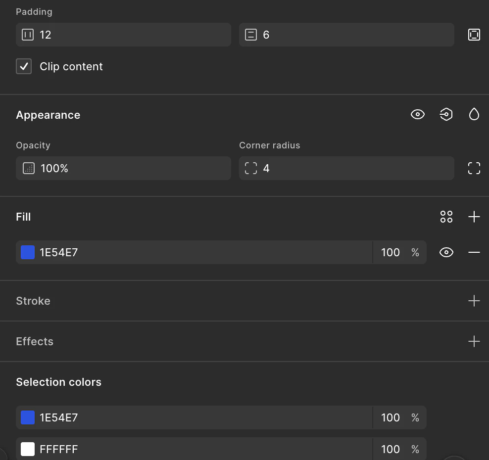
The same Button after the relinker: every value is a variable.
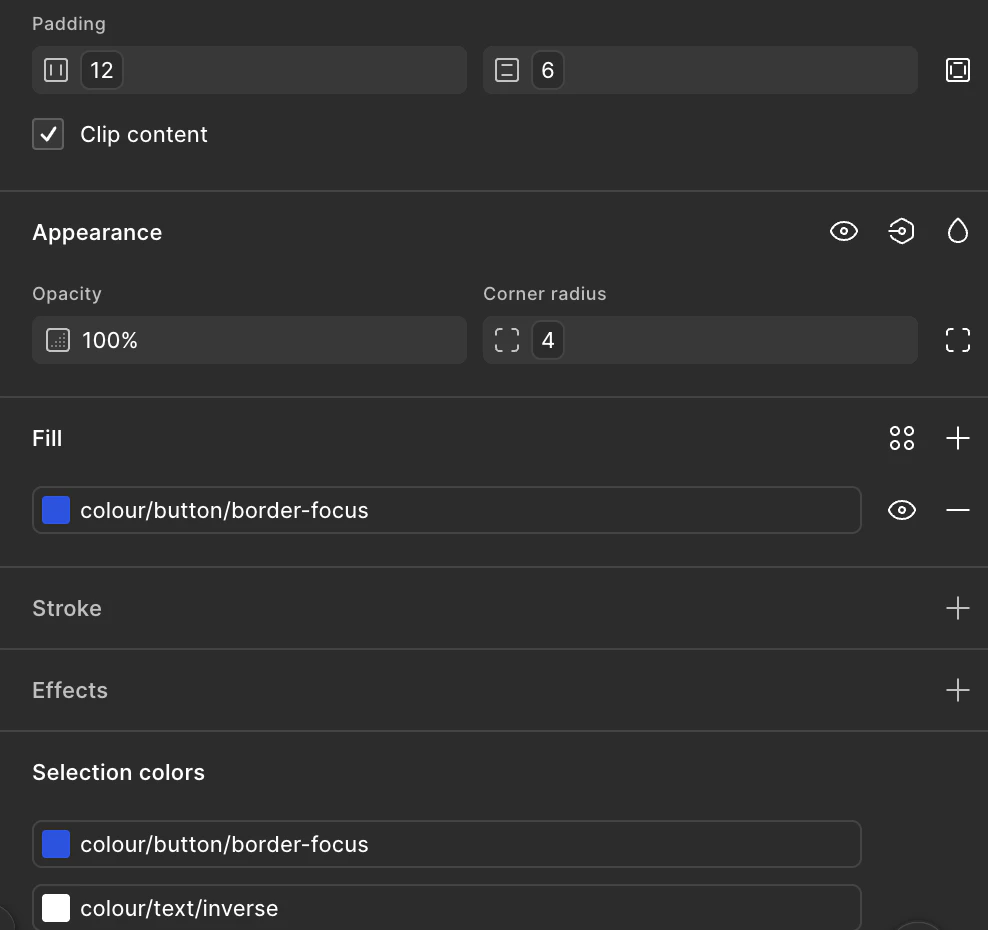
How the two plugins workType tokens and the variable relinker, step by step
Plugin 1Tokenization for type
Created the type variables (size, weight, family, line height), merged text styles that shared a size and weight, swapped every use onto four shared groups, and deleted the duplicates.
One run covers every page, component and nested instance in the file, then reports anything it couldn't convert.
→→
One text style group per component, each redefining the same few sizes under new names. Look at button: large and medium are both 14/20. Breadcrumb default, underline and button small are all 12/16.
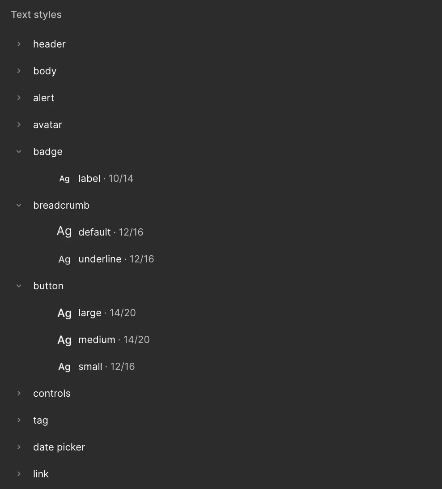
Every component style mapped to a shared one, across every page.
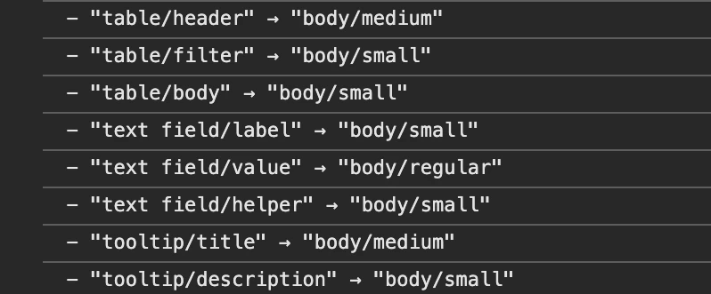
Four shared groups (heading, body, small and xsmall) replaced one per component. Every
style now reads its size, weight and line height from a variable, so changing body text across the whole file
is one edit, not a hunt through every component.
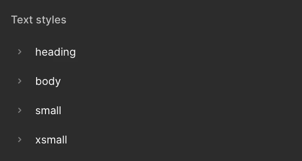
The four groups.
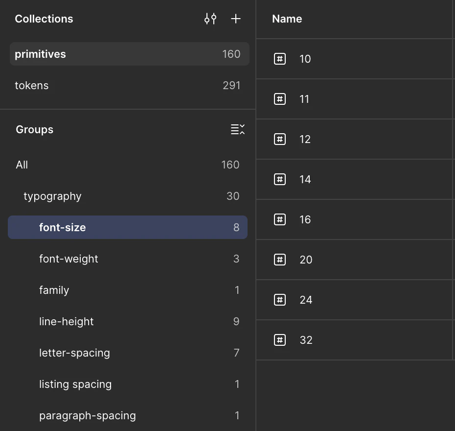
The variables behind them: 8 font sizes for the whole file.
Plugin 2Variable relinker for everything else
Creates nothing new. It connects colours, padding, gaps, radii and stroke widths to the variables that already exist, and repairs broken links. 1,516 properties in its biggest run.
Figma's built-in fixes can reconnect a variable to its library or detach a dead one.
They can't turn a raw 12 into space-12, or point a dead variable at its replacement. This does both.
→
Links to variables that no longer exist: 29 on one component.
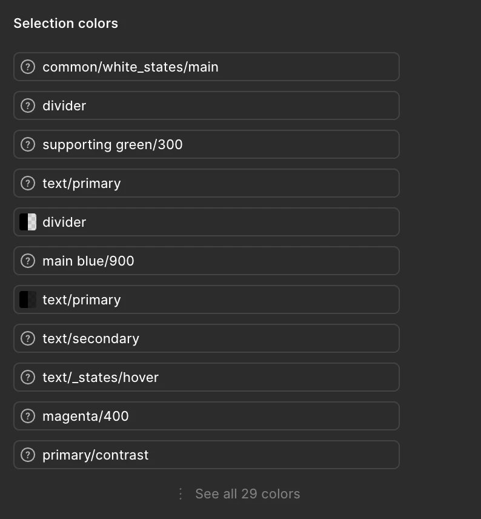
Each value matched to a live token. Anything without one is flagged, not guessed.
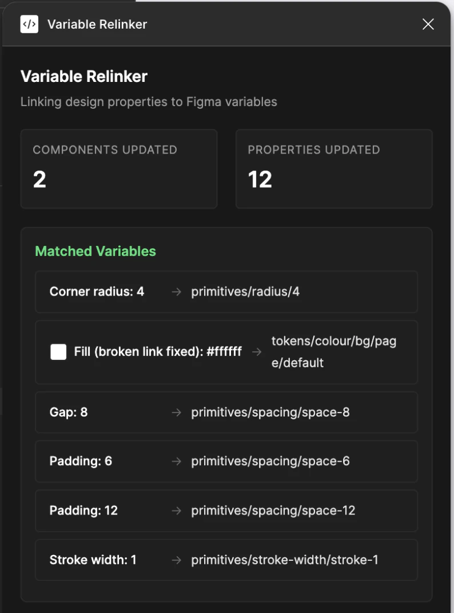
Step 2
Version one: generated in days, hollow underneath
I built two more plugins: one exports the clean file as JSON that code can read, and one packages any frame
for an agent. Then an agent generated the library from that export: 33 components, 156 Storybook stories
and 420 passing tests in a few days. When I built a real screen with them, they fell apart.
22/33components held their own state, so the app never heard a change
7/33were showcase pieces you couldn't use in a product
75hard-coded colours, despite a token file made for this
0/420tests rendered a component, so every one passed
The cause was my rules: they were written for Storybook. Every component had to be interactive in Storybook, so each
one kept its own state. Every Figma property had to be a Storybook control, so hover and focus became a dropdown.
117 lines. Hover and focus are a dropdown, labels are show/hide toggles, and there's no onChange, so the app can't tell the switch was flipped.
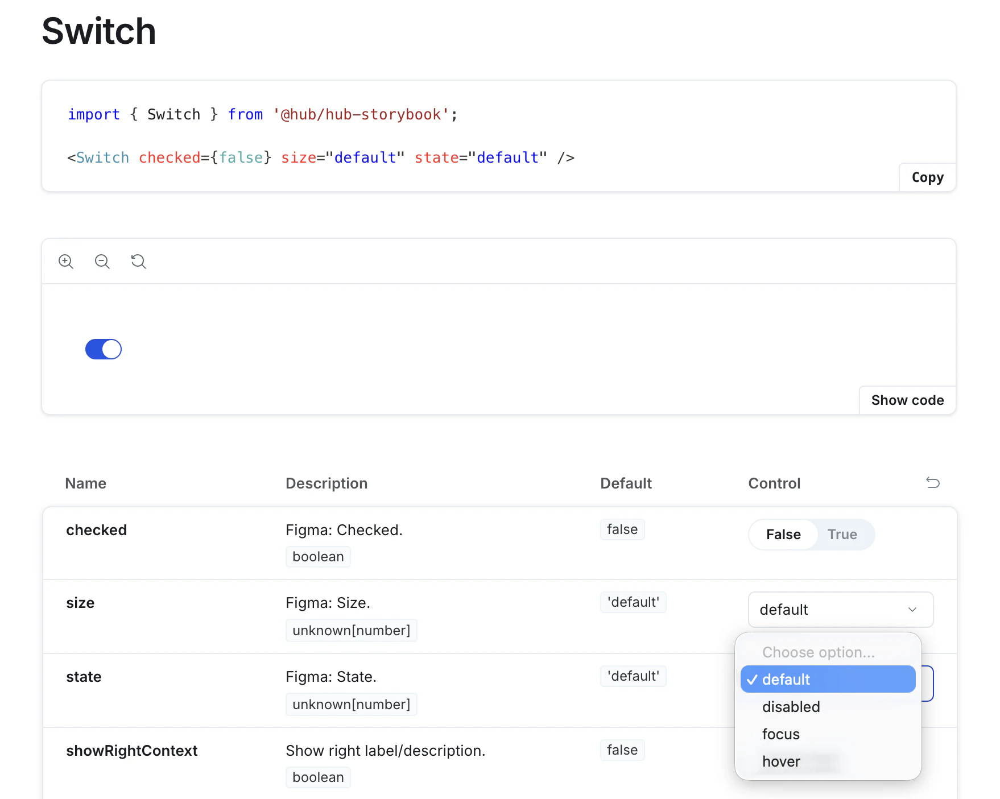
12 lines. MUI's own Switch. checked, onChange, disabled and size work as MUI documents them; the look comes from the theme.
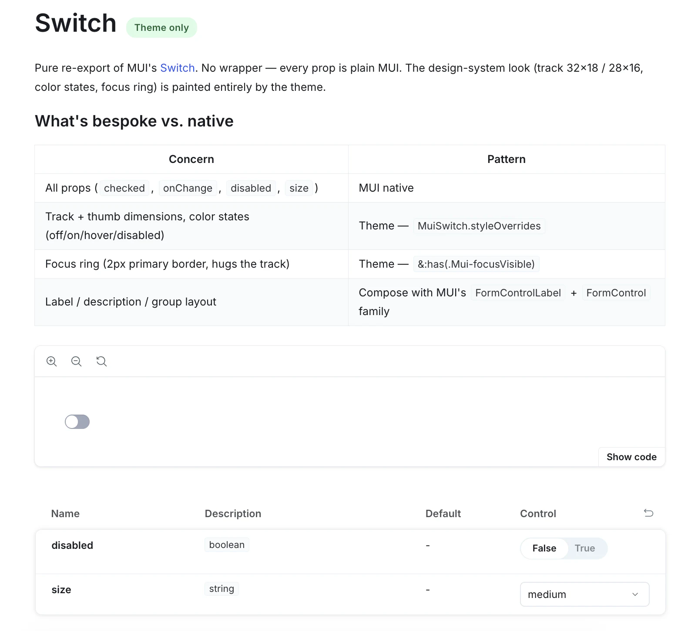
See the codeThe Switch, version one and version two
Switch, version one · 117 lines
export const Switch = ({ checked = false,
size = 'default', state = 'default', ... }) => {
const [on, setOn] = React.useState(checked);
React.useEffect(() => setOn(checked), [checked]);
...
<MuiSwitch checked={on}
onChange={(_, v) => setOn(v)} />
// no onChange prop: the app never hears about it
Switch, version two · 12 lines
import MuiSwitch from '@mui/material/Switch';
// All styling lives in theme.components.MuiSwitch,
// built from design tokens.
export const Switch = MuiSwitch;
Everything that broke, and whyEach problem in detail, and how the rules caused them
State the app couldn't see. A Switch toggled on screen but had no onChange, so the app never knew it had changed.
Showcase pieces. The Menu rendered five hard-coded rows, with no way to pass items, open it or anchor it to a button. Dialog, Select and Tabs were the same.
Tests that couldn't fail. All 420 searched the source code for strings instead of rendering a component.
Behaviour had become a dropdown. 18 components had a state prop with options like “hover” and “focus”, turning things the browser handles into settings you pick.
Nothing was accessible. There were zero ARIA attributes across the library, and a radio button you could click off.
My rules told the agent to build on MUI, and it did. Each rule made sense on its own, but together they wrapped MUI
so tightly that product code lost everything MUI normally gives you: children, onChange,
anchoring, keyboard support. Icons had to be picked from a list, so you couldn't pass your own.
Where the rules were right, nothing enforced them. They said never hard-code a colour, and the library had 75.
They said build from our own components, and the group components imported raw MUI and restyled it inline.
The export and handoff pluginsPlugins 3 and 4, with the handoff prompt's rules
Plugin 3Figma export from Figma to code
Exports variables, components and icons as JSON with consistent names that a script, an engineer or a model reads the same way. A Button with a hundred variant nodes comes out as one component with its options. A re-export that used to mean six to eight hours of hand fixes now takes about ten minutes and none.
→
Pick a component, export it in full or just what changed.
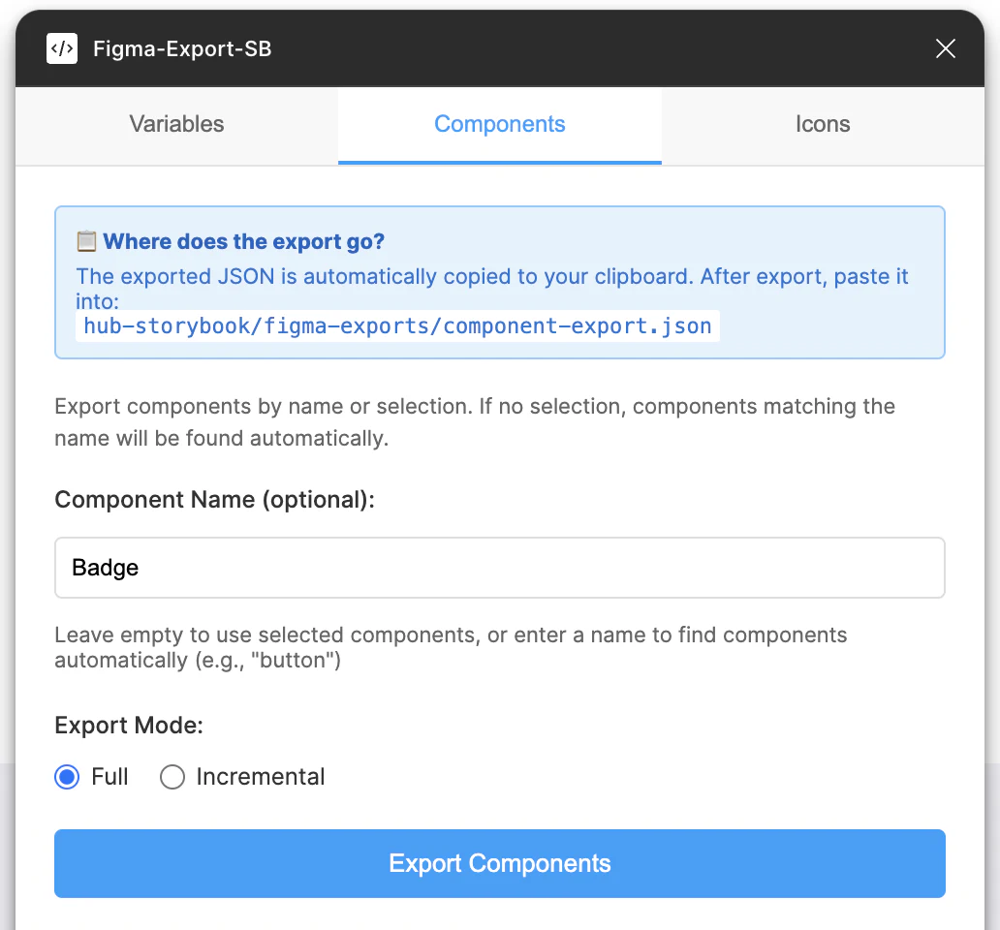
Badge.json, simplified: every variant and its options, plus a deep link the agent uses to read the live design. Node IDs and file keys removed.
Packages one frame for an agent instead of writing code for it: the full spec with exact values, a ground-truth render, the real SVG and image bytes, and a prompt that tells the agent where every value lives and what "done" means.
"The spec is large, I'll be efficient and skip parts." It fits in context. Read all of it.
"I can't find the dimensions, I'll measure the PNG." Every node has size.width. The PNG is for checking, not measuring.
"I'll substitute Lucide or Heroicons, they look similar." The exact path data is in svgInline. Use it verbatim.
"This text seems off, I'll fix it." A badge that says 3 says 3.
"This looks close enough, calling it done." Render, compare to the PNG, fix, repeat.
Step 3
Version two: tested rules, then a theme-first library
Version two started by deciding what “done” meant. I audited all 38 components, and hard-coded colours and pixel
values showed up in 31 of them. I rewrote the agent's rules so a component extends MUI instead of copying the
Figma picture, and turned the important rules into tests that render each component and fail the build on a hard-coded colour.
Then I moved the design into the theme. Most components became MUI's own, styled from tokens, so a product
adopts the system by installing the theme and keeps importing MUI as before. Custom components are only for what MUI
doesn't have. Breadcrumbs went from 289 lines to 20, and three custom group components were deleted.
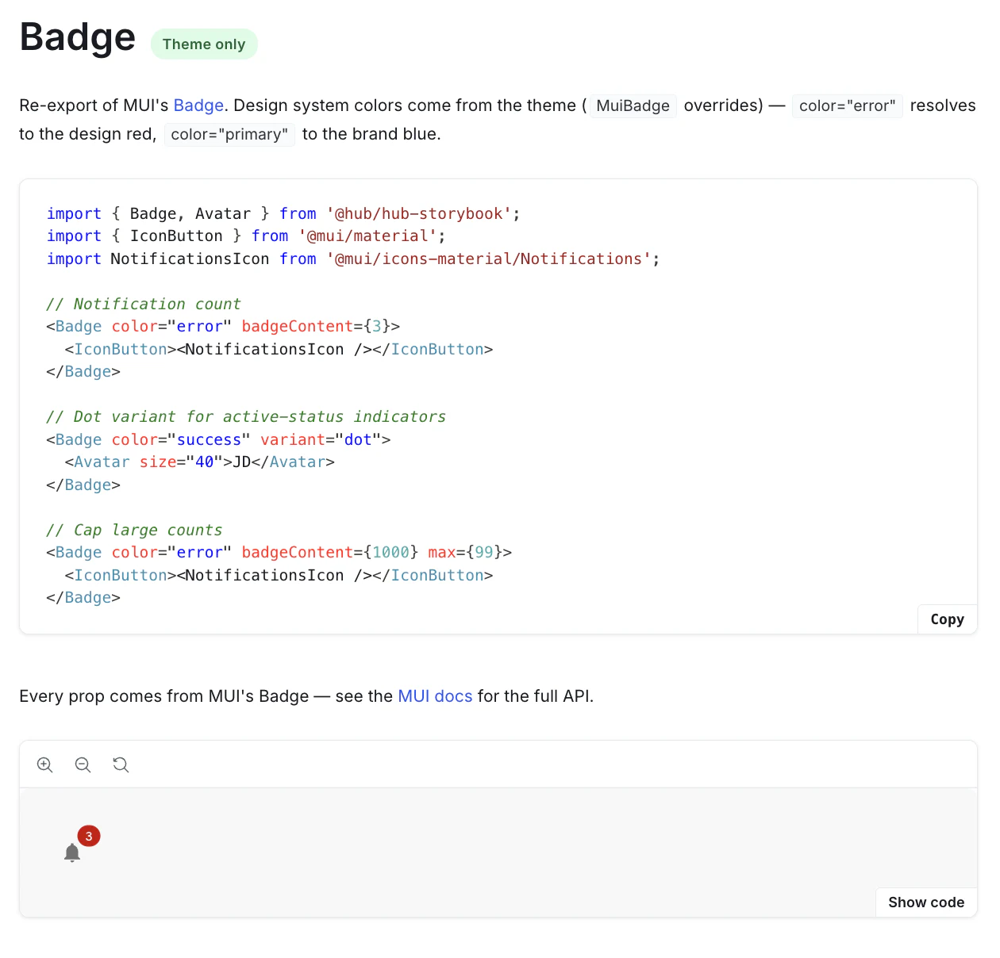
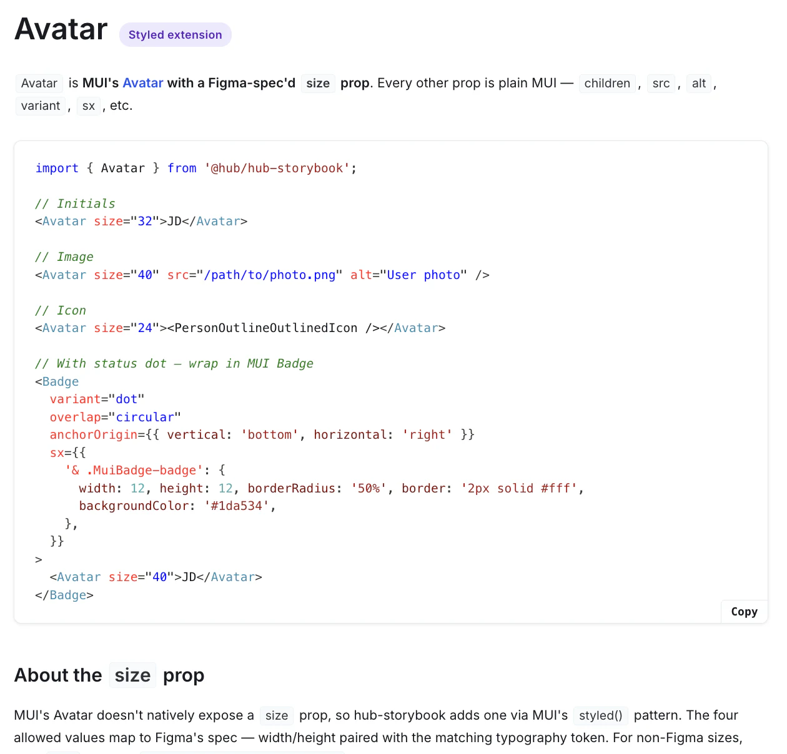
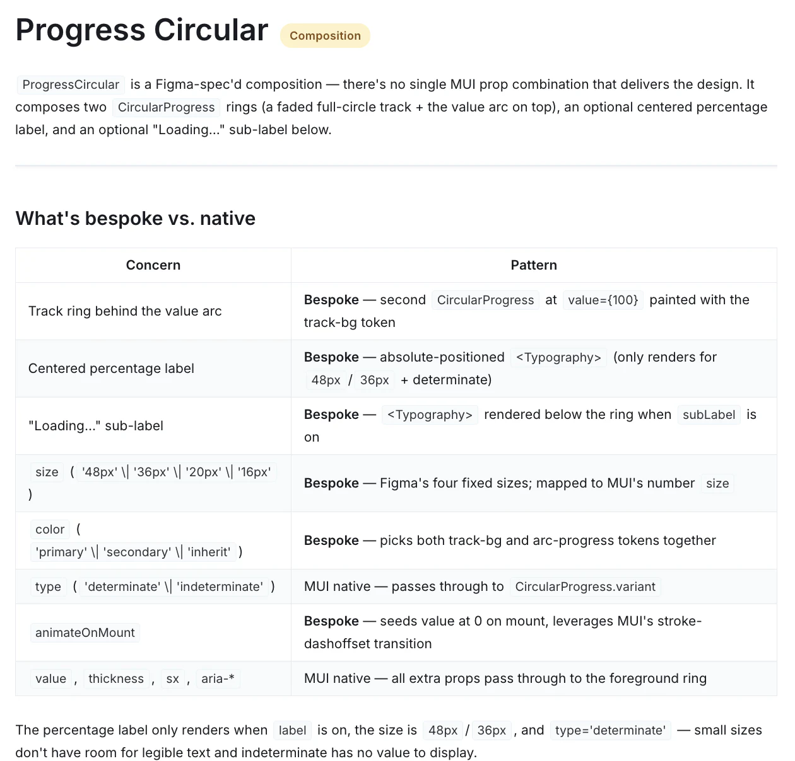
Every component's docs page in Storybook carries its type, and says what's bespoke and what's plain MUI.The component types and the rules behind themHow a new component is built, and why
Type
What it is
Examples
Theme only
MUI's own component, re-exported, including MUI X ones like the data grid. All the design lives in the theme, built from tokens.
Switch, Tabs, Dialog, TextField, DataGrid
Styled extension
MUI plus the one thing Figma needs that MUI doesn't have, as a single prop the theme reads.
Avatar sizes, Chip variants, IconButton variants
Slot override
One piece of MUI's render tree doesn't match Figma, and MUI exposes it as a slot. A small component fills the slot. Nothing wraps the whole thing.
The date picker's action bar and day cell
Composition
A new component assembled from design-system parts, for things MUI doesn't offer.
Sidebar, Topbar, Stepper, Drawer
You always pick the lightest type that works: the theme first, then a slot, and composition last. Every custom
wrapper is an API teams have to migrate to and we have to keep in step with MUI, so composition is only for what
MUI doesn't have. The slot rule came out of review: most of what looked like “MUI can't do this” was a slot nobody had wired yet.
The agent's other rules stop it guessing. It takes the MUI API from MUI's documentation server, never from memory;
it maps every Figma value to the exact token; and it measures the render against Figma before calling a component done.
The outcome
4products built on the library
~8fewer Figma Dev seats, since developers build from the package
9new components built from the guide since May
240Storybook stories, with tests that actually render
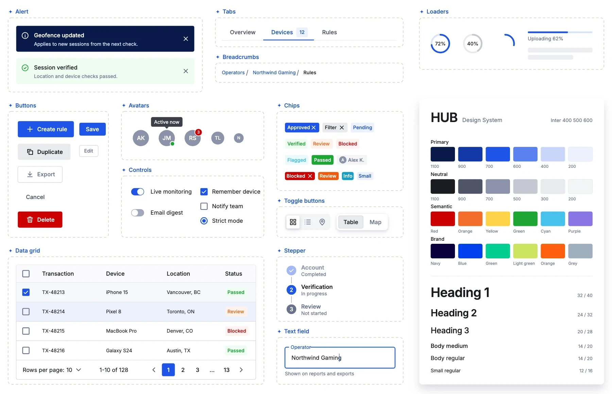
The library today: components, colours and type, all styled from the same design tokens.
Visual bug tickets fell from about four a month to under one. A page redesign that took five weeks and eight rounds of
UI fixes in 2024 now ships in one pull request in a day or two.
Because every screen uses the same components, QA's automated Playwright tests can check a component once and
trust it everywhere. Running them against Storybook is the next step.
Adoption and contribution
A product adopts the system by installing the theme and keeps importing MUI, so the only API change consumers saw was
<Button label="Save" /> becoming <Button>Save</Button>. Products move over page by page,
starting with the sidebar. A design change is one token edit, and every product picks it up when it updates the package.
New components come in through one path, and the checks along it run on their own.
Check MUI firstMost needs are a theme change to an MUI component. Only gaps get a new one.
An agent builds itFrom the rules file, which lists 18 past agent mistakes so they don't repeat.
Tests block mistakesThe build fails on a hard-coded colour or a component copied instead of reused.
Ships to all four productsOnce it matches Figma, it goes out in the next package release.
How a new component gets into the library. The guide's 19 rules each came from a code review.
Project details
Stack
React 18, TypeScript, MUI 6, Storybook, Style Dictionary, Chromatic, Figma Plugin API, Cursor, Claude Code
When
2025 to 2026
With
The designers who own the Figma library, and the four product teams that build on the library